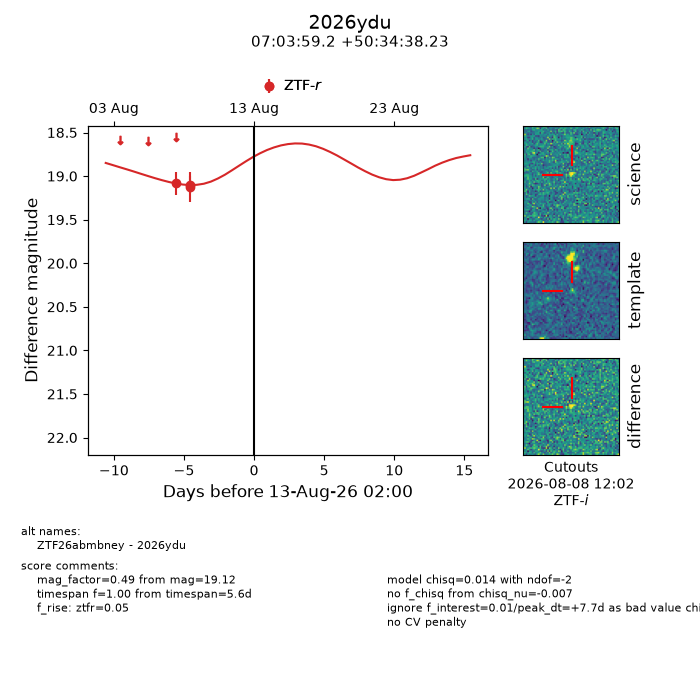
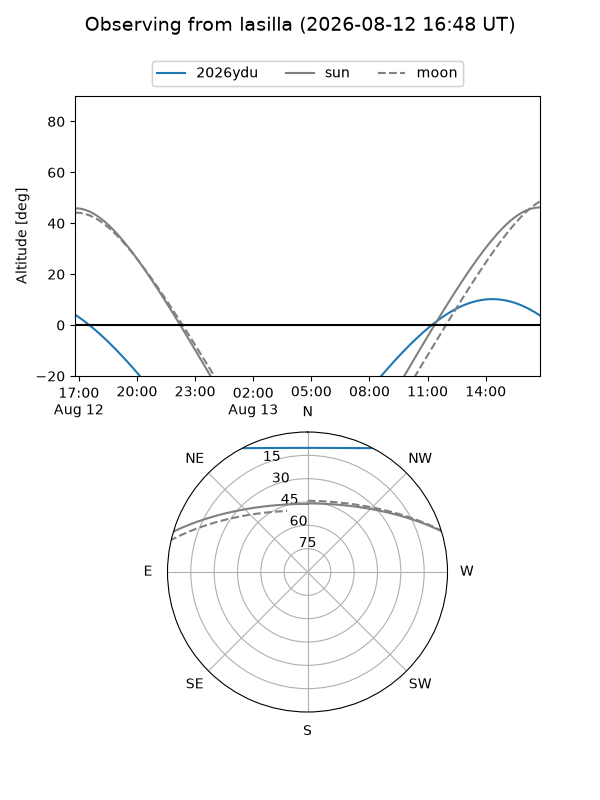
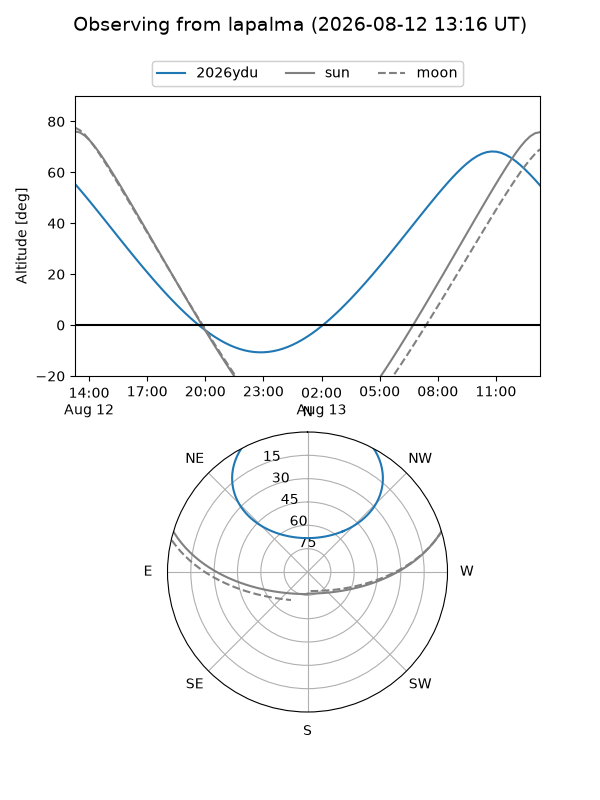
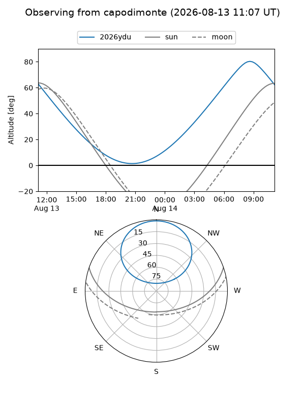
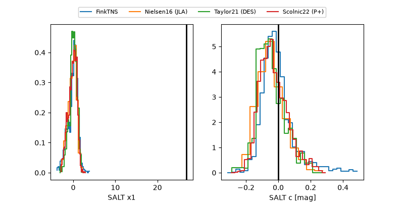

2026ydu
Target 2026ydu at 2026-08-13 13:37
Aliases and brokers:
FINK-ZTF: ztf.fink-portal.org/ZTF26abmbney
Lasair-ZTF: lasair-ztf.lsst.ac.uk/objects/ZTF26abmbney
ALeRCE-ZTF: alerce.online/object/ZTF26abmbney
YSE-PZ: ziggy.ucolick.org/yse/transient_detail/2026ydu
TNS name: wis-tns.org/object/2026ydu
Direct TNS query: direct search
alt names
ZTF26abmbney (ztf,fink_ztf)
2026ydu (tns,yse)
Coordinates:
equatorial (ra, dec) = 105.9965,+50.57729
equatorial (HMS+DMS) = 07:03:59.16,+50:34:38.23
galactic (l, b) = (166.2839,+22.53004)
Flags:
TNS type: nan
peak dt: +8.2
Photometry:
last ztfr=19.12
3 ztfr detections
Lightcurve

Visibility



Additional plots
